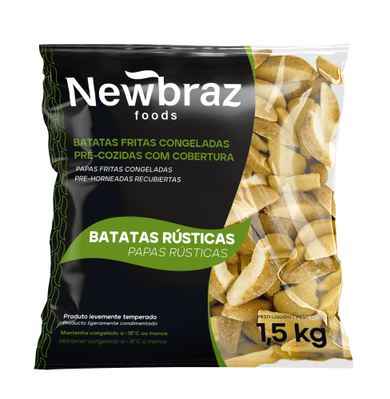
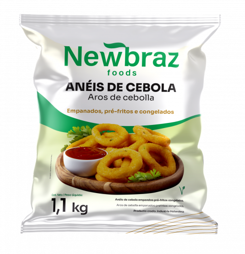

Purê de Batatas
1,01 kg
Purê de batatas prático e delicioso, pronto para preparo rápido.
Ler mais

Batata Rústica
1,5 kg
Batatas fritas congeladas pré-cozidas com cobertura, no estilo rústico.
Ler mais
Batata Crinkle
1,5 kg
Batatas pré-fritas congeladas no formato ondulado, levemente temperadas.
Ler mais

Batata Tradicional 10mm
2 kg
Batatas pré-fritas congeladas em corte tradicional (10mm).
Ler mais
Batata Canoa
1,5 kg
Batatas fritas congeladas pré-fritas com cobertura, no formato canoa.
Ler mais
Batata Corte Fino
2 kg
Batatas pré-fritas congeladas em corte fino, levemente temperadas.
Ler mais

Batata 6mm
1,5 kg
Batatas pré-fritas congeladas em corte fino (6mm), com cobertura especial.
Ler mais
Batata 9mm
1,5 kg
Batatas pré-fritas congeladas em corte tradicional (9mm).
Ler mais

Anéis de Cebola
1,1 kg
Aros de cebola empanados, pré-fritos e congelados.
Ler mais
Óleo de Algodão
Disponível nas quantidades 14,5kg/6 litros
Óleo de Algodão.
Ler mais